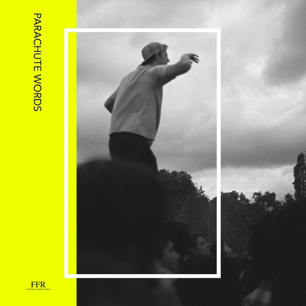

I Like It When You Sleep, For You Are So Beautiful Yet So Unaware Of It
The 1975
Upgrade idea: This original Sterling Sound pressing is the definitive version. No significant audiophile reissue exists — the first pressing is the reference.
- Original release
- 2016
- Pressing year
- 2016
- Country
- US
- Format
- 2× Vinyl LP, Album (Clear, 180 Gram, Rainbo Pressing)
- Label / Cat#
- Dirty Hit – B0024452-01 / Interscope Records – B0024452-01
- Genres
- Electronic, Rock, Pop
- Styles
- Alternative Rock, New Wave, Synth-pop, Indie Rock
- Discogs release
- 8170150
- Discogs master
- 963890
- Wikipedia
- I Like It When You Sleep, For You Are So Beautiful Yet So Unaware Of It
Production notes
Tracklist (Discogs)
| A1 | The 1975 | 1:23 |
| A2 | Love Me | 3:42 |
| A3 | UGH! | 3:00 |
| A4 | A Change Of Heart | 4:43 |
| A5 | She's American | 4:30 |
| B1 | If I Believe You | 6:20 |
| B2 | Please Be Naked | 4:25 |
| B3 | Lostmyhead | 5:19 |
| B4 | The Ballad Of Me And My Brain | 2:51 |
| C1 | Somebody Else | 5:47 |
| C2 | Loving Someone | 4:20 |
| C3 | I Like It When You Sleep, For You Are So Beautiful Yet So Unaware Of It | 6:26 |
| C4 | The Sound | 4:08 |
| D1 | This Must Be My Dream | 4:12 |
| D2 | Paris | 4:53 |
| D3 | Nana | 3:58 |
| D4 | She Lays Down | 3:58 |
Personnel & credits
- Samuel Burgess-Johnson — Art Direction, Design, Photography
- Ross MacDonald (2) — Bass Guitar, Electric Upright Bass
- George Daniel — Co-producer, Drums, Percussion, Keyboards, Synthesizer, Programmed By
- Matthew Healy — Co-producer, Lyrics By, Vocals, Guitar, Piano, Keyboards, Art Direction
- Mike Crossey — Co-producer, Mixed By, Programmed By
- Jonathan Gilmore — Engineer, Programmed By
- Adam Hann — Guitar
- Ray Janos — Lacquer Cut By
- Jamie Oborne — Management, A&R
- Chris Gehringer — Mastered By
- David Drake — Photography By
- Edward Emberson — Photography By
Identifiers
- Barcode: 6 02547 71666 8 (Text)
- Barcode: 602547716668 (Scanned)
- Matrix / Runout: S-96899 RE-1 B0024452-01A-RE1 RJ STERLING (Side A runout)
- Matrix / Runout: S-96900-RE1 B0024452-01B-RE1 RJ STERLING (Side B runout)
- Matrix / Runout: S-96901 RE-1 B0024452-01C-RE1 RJ STERLING (Side C runout)
- Matrix / Runout: S-96902 RE1 B0024452-01D-RE1 RJ STERLING HEY KIDS! WE'RE ALL JUST THE SAME, WHAT A SHAME (Side D runout)
Notes
Issued in a gatefold jacket.
Not to be confused with a [url=https://www.discogs.com/release/29491420]later reissue plated by GZ Media[/url].
In the runouts, STERLING is stamped and the rest is hand-etched.
The album was recorded & mixed at Ravenscourt Studios, Askew Road, London, UK & The Ranch, Woodland Hills, California, USA between February & November 2015. Gospel Choir thanks to Neilly Dickerson. Strings arranged by Miguel Atwood-Ferguson. This sound recording is owned by Dirty Hit LTD. 2016 Dirty Hit, under exclusive license to Interscope Records, a division of Universal Music Group LTD.
Notes & discrepancies
- No Apple Music match found.
I Like It When You Sleep, for You Are So Beautiful yet So Unaware of It is The 1975’s second studio album, released in February 2016 on Dirty Hit / Interscope Records, and the record that established them as one of the most critically significant British rock bands of their generation. Produced by Matty Healy and George Daniel, it is a sprawling, genre-defiant double album that moves effortlessly between 1980s synth-pop (“The Sound,” “Love Me”), ambient electronic interludes, jazz-inflected balladry (“Nana”), funk (“UGH!”), and orchestral pop (“If I Believe You”). It debuted at #1 in both the UK and US — a rare feat for a British rock album — and won the BRIT Award for Best British Album.
The album is notable for its ambition and its refusal to be pinned down sonically. Healy’s songwriting is self-aware and literary without being pretentious, and the band’s production combines genuine sonic adventurousness with pop accessibility in a way that few artists manage. The all-white artwork and visual identity gave the album an instantly distinctive look that became one of the iconic album covers of the decade.
This 2016 original US pressing (Dirty Hit / Interscope catalog B0024452-01) was mastered at Sterling Sound with cutting engineer RJ — Sterling Sound is one of New York’s premier mastering facilities. The deadwax message on Side D — “HEY KIDS! WE’RE ALL JUST THE SAME, WHAT A SHAME” — is a classic The 1975 touch, embedding their sardonic wit into the physical artifact itself.
About this 2016 US pressing (2× Vinyl, LP): Dirty Hit / Interscope catalog B0024452-01, original 2016 US pressing. Double LP. Mastered at Sterling Sound (RJ). Barcode 602547716668. Matrix S-96900-RE1 B0024452-01B-RE1 RJ STERLING.